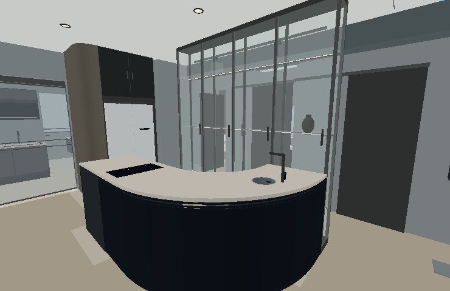
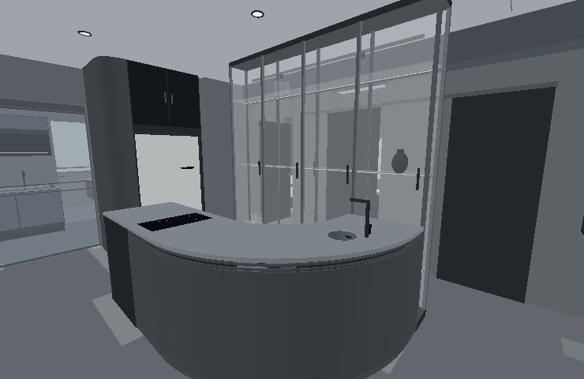
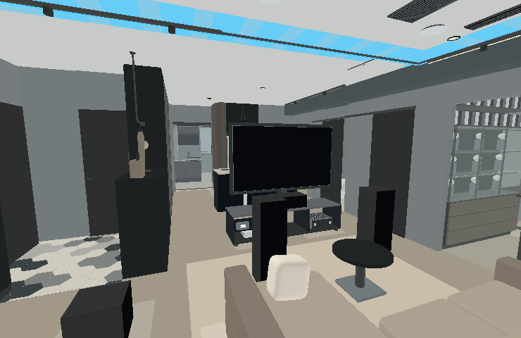
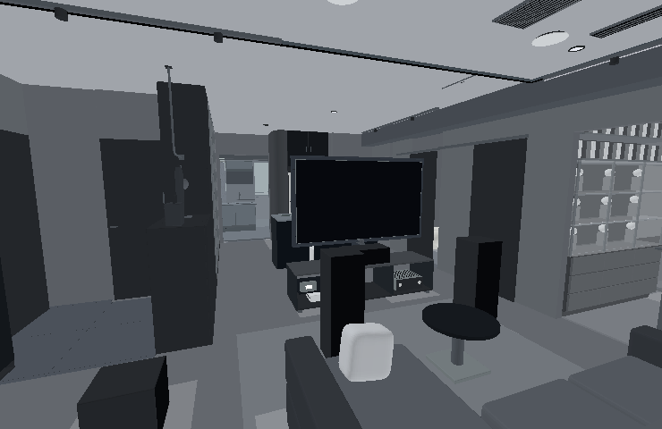
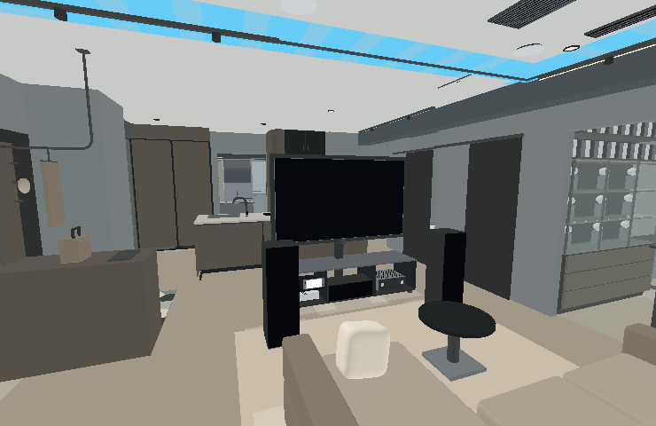
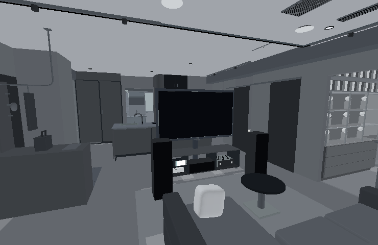
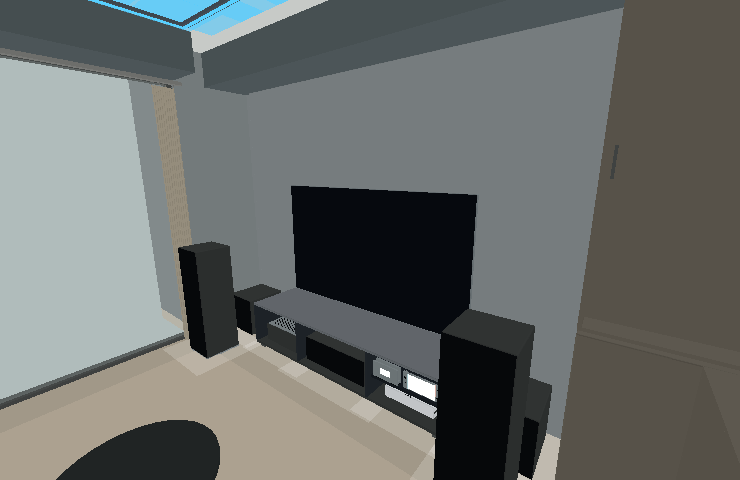
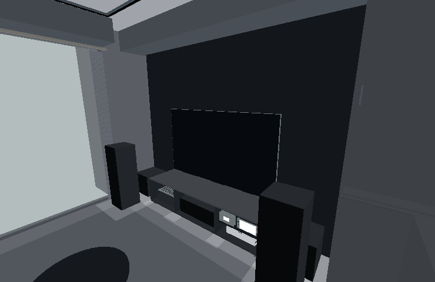
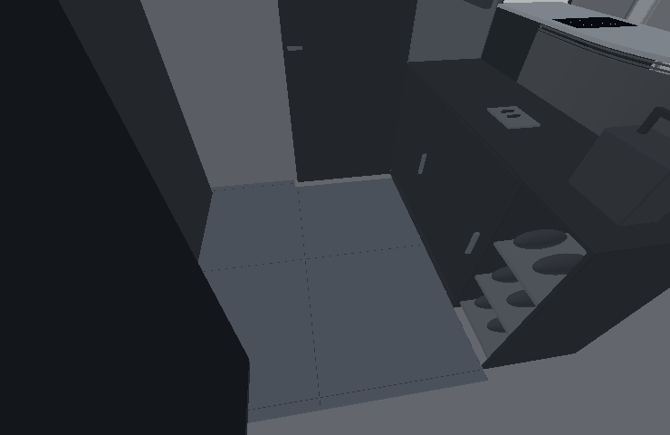
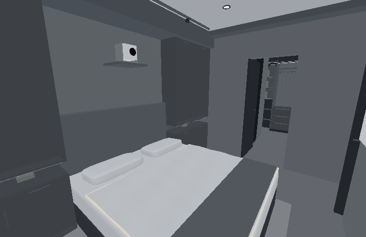

水泥灰牆面#686D73
煙燻橡木#45494E
黑鈦金屬#353C46
反射黑玻#171B20
玄關石墨磚#4F565F
炭灰織品#575C63
以下為實際模型幾何與基礎配色的離線檢視，未呈現 GPU 木紋、反射及燈光。日常與酒吧效果請按各版 3D 連結查看；這次尚未完成實機 GPU 視覺驗收。
V1 · 圓弧中島酒吧＋玄關矮櫃
深木弧形外皮、石墨灰檯面、透明玻璃展示與霧黑框架。

調整前
調整後 · 模型配色檢視V2 · 旋轉電視＋小中島
黑鈦旋轉電視與金屬周框；小中島石材、深木影音上板。

調整前
調整後 · 模型配色檢視V3 · 旋轉電視＋大中島
較深石墨灰大中島、煙燻木端面與黑鈦影音組。

調整前
調整後 · 模型配色檢視V4 · 大中島
南牆黑玻影音區、灰階石材大中島與炭灰客廳織品。

調整前
調整後 · 模型配色檢視燈光操作
3D 頁面 →「設備控制」→「燈光與窗簾」→「室內白光與情境」。亮度、光色、展示與中島重點光可分別調整；主臥情境仍獨立。
| 情境 | 光色設定 | 呈現 |
|---|
| 日常 | 4000 K | 公共區與書房清楚明亮 |
| 用餐 | 3000 K | 中島與收藏柔和照明 |
| 酒吧 | 2400 K | 低亮度昏黃、保留收藏與檯面重點 |
| 電影 | 2700 K | 弱化一般照明、關閉展示重點光 |
| 遊戲 | 3500 K＋RGB | 中性背景光與可獨立調整的呼吸燈 |
| 夜間 | 2200 K | 低位與低亮度引導 |
光色數值為 3D 視覺模擬，非現場照度或燈具量測。日常切為日景，其餘預設切至夜景；窗簾保持目前開合。右側顯示設定的「畫面曝光」與室內照明分開。
共用房間與地坪

玄關80公分大板磚、2mm接縫、4mm黑鈦收邊；與木地板齊平。
主臥、書房與更衣室延續煙燻木與黑灰白；主臥仍有化妝、閱讀與投影情境。